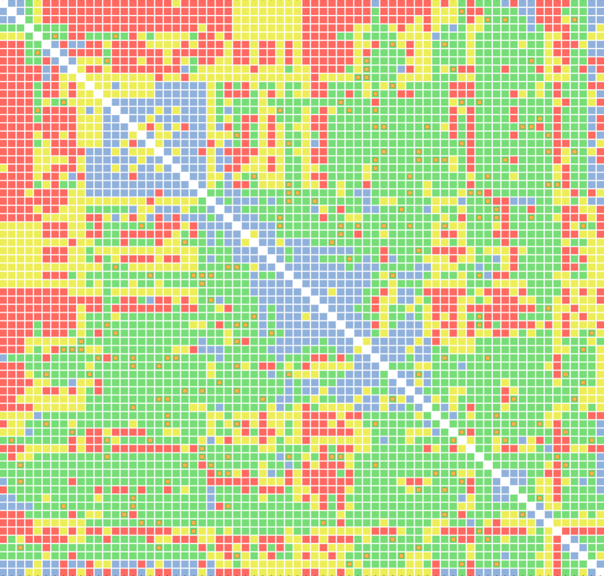
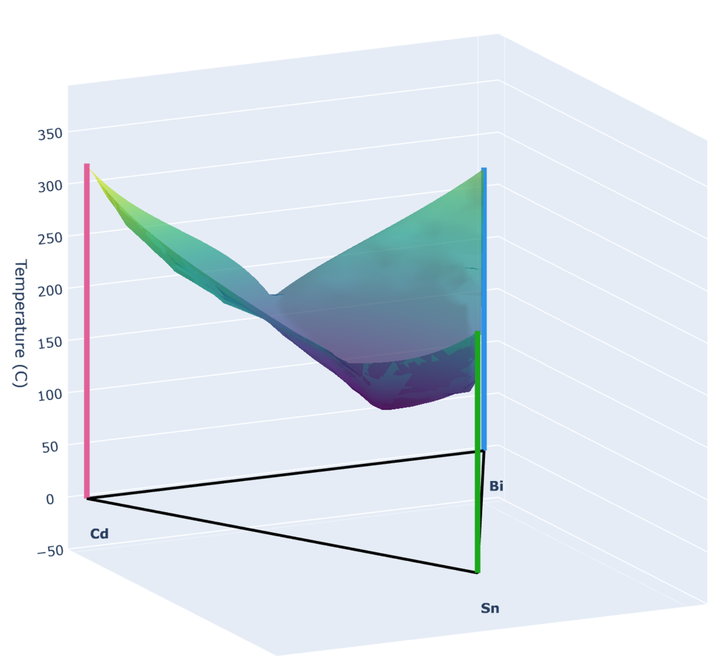

Projects & Applets
Interactive demos and mini-applications
My Projects
Binary Phase Diagram Map
An interactive matrix of DFT-referenced phase diagrams fitted from experimental assessments. This tool allows users to explore the data provenance for fitted non-ideal mixing parameters, which forms the basis for the GLiquid database.

Ternary Phase Diagram Plotter
A web app for generating ternary liquidus surfaces from a specified system of three elements. This app interpolates between the GLiquid-fitted binary phase diagrams to generate a high-temperature ternary phase diagram without additional ternary correction parameters.

Flashdeck
A quiz app that creates flashcard decks from user-provided CSV files. Users can review and test their knowledge on any topic by creating custom flashcard decks and using the built-in quiz mode.
More on the way…
New projects and applets are in progress. Check back soon, or follow me on GitHub to be notified when new work is published.